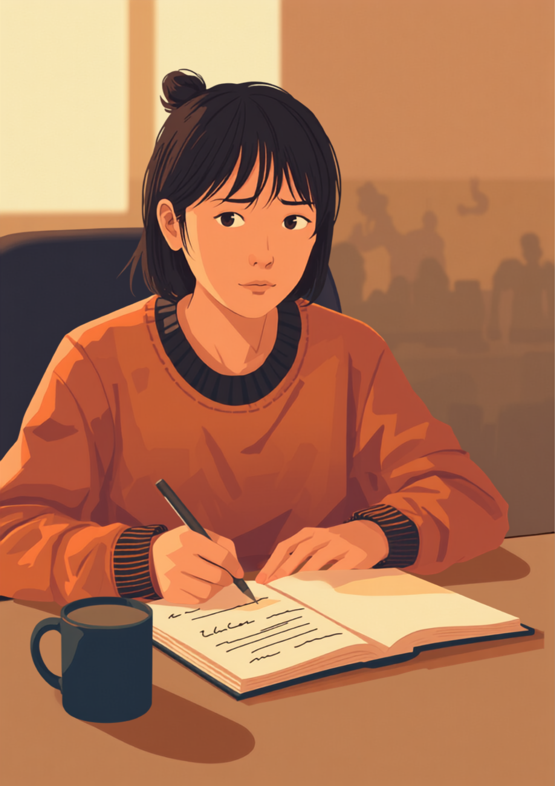
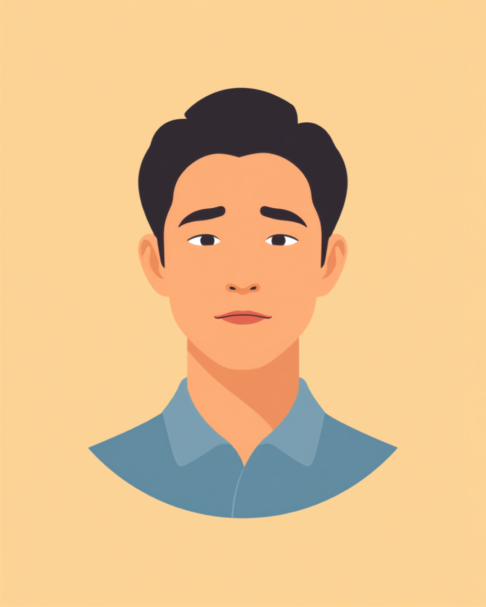

「字が汚い」「もっと丁寧に書いて」。子どもの頃から何度も言われ続けてきたのに、いくら練習しても変わらない。そんな経験を抱えたまま大人になり、会議のメモや報告書の作成でつまずいている方は少なくないようです。この記事では、書字障害（ディスグラフィア）があり文字を書くことに難しさを感じながら働く方が抱えやすい悩みと、職場での伝え方、使える工夫や制度を当事者の声をもとに整理しました（2026年8月時点の情報です）。
PR



頑張って書いているのに、あとで自分でも読み返せないことがある
「また字だけ汚いって言われた」会議でメモが取れないつらさ

書字障害（ディスグラフィア）は、話したり読んだりすることに大きな困難がなくても、頭の中にある考えを手書きの文字として書き表すことに難しさを感じる特性のことです。学習障害（LD）のひとつとされています。まめざる
就労支援の現場で話を聞いていると、「会議中にメモを取ろうとすると、話についていけなくなる」という声によく出会います。書字障害のある方にとって、話を聞きながら同時に手を動かして文字を書くという作業は、想像以上に負荷の高い作業になっていることがあるようです。結果として、あとで自分のメモを見返しても何が書いてあるのか分からず、内容を思い出せなくなってしまうこともあります。
本人としては、決して手を抜いているつもりはありません。むしろ人一倍集中して書こうとしているのに、周りからは「やる気がないから雑なんだ」「もっとちゃんと書けばいいのに」と受け取られてしまう。そのずれが、静かに自己肯定感を削っていくことがあるようです。
!
書字障害の現れ方や困りごとの程度には個人差があります。この記事で挙げる内容がそのまま当てはまるとは限らないため、気になる症状がある場合は自己判断せず専門機関に相談することをお勧めします。
「事務職について8年になりますが、報告書や議事録の手書き清書がずっと苦手でした。同じ字を書いているつもりでも、大きさがバラバラになったり、漢字がどうしても思い出せなくてひらがなでごまかしたり。上司に『字が雑すぎて読めない、遅すぎる』って何回か言われて、そのたびにすみませんって謝るしかなくて。正直、書類仕事のたびに胃が痛くなってました。3年前にディスグラフィアの診断を受けて、業務をパソコン入力中心に変えてもらってから、ようやく評価される側になれた気がします。」
30代・女性（書字障害・事務職）
「営業やってるんですけど、名刺交換のあとの宛名書きとか、伝票の手書き欄がめちゃくちゃ苦手です。漢字がふっと出てこなくなる瞬間があって、簡単な字なのに一瞬固まったりします。半年くらい前、取引先の名前を書き間違えて先輩に注意されたときはさすがに落ち込みました。今はスマホのメモアプリで下書きしてから清書するようにしてて、それだけでもだいぶミスが減った気がします。」
20代・男性（書字障害の疑い・営業職）
相談の一コマ

相談者
会議のメモがどうしても取れなくて、いつも話に置いていかれるんです。字も汚くて、あとで自分で読んでも分からないことがあって。
まめざる
話を聞きながら同時に手で書くというのは、実はかなり複雑な作業なんです。それが難しいと感じるのは、集中していないからではないと思いますよ。
相談者
そう言ってもらえると、少し楽になります。今までは自分の努力不足だと思ってました。
まめざる
まずは「書く」以外の記録手段を増やすところから考えてみましょう。次の章で、実際にどんな工夫ができるか一緒に見ていきますね。
書字障害（ディスグラフィア）ってどんな特性?文字を書く難しさの正体
書字障害は、学習障害（LD）に含まれる特性のひとつとされています。読むことや話すことには大きな困難がない一方で、頭の中の言葉を手書きの文字に変換するという工程だけに難しさが集中して現れる場合があるようです。文字の形やバランスが崩れる、書くスピードが極端に遅くなる、漢字を思い出しにくい、句読点の位置がずれるなど、現れ方は人によってさまざまとされています。
i
書字障害は、学生時代には「作文や漢字の宿題が少し苦手」程度に見えることが多く、大人になって書類作成や議事録といった業務量の多い場面で初めて困りごとがはっきり表面化するケースがあるとされています。
大切なのは、書字障害は本人の努力不足や注意力の問題ではないという点です。脳が文字を書くための情報を処理する仕方に特性があると理解されており、練習量だけで解決しようとすると、かえって本人を追い詰めてしまうことがあります。
職場でどう伝える、手書きを減らす工夫で働きやすくする
「書かない」ではなく「書く場面を選ぶ」という考え方
すべての手書きをなくすことは難しくても、業務の中で本当に手書きが必要な場面を見極め、それ以外をデジタルツールに置き換えていく方法が現実的とされています。会議の記録はICレコーダーやメモアプリに任せ、その場では箇条書きだけ手書きして、あとで清書するという進め方をしている方もいるようです。
- 会議は録音・文字起こしアプリを併用し、手書きメモは要点だけに絞る
- 報告書や伝票はパソコン入力を基本にし、手書き欄は最小限にとどめてもらう
- 漢字の変換ミスが不安なときは、辞書アプリや変換候補を確認する習慣をつける
- その場で清書しようとせず、下書き→清書の2段階に分けて時間の余裕を作る
「字を上手に書けるようになる」ことよりも、「書かなくても業務が回る状態を増やす」ことのほうが、実際の負担を減らしやすいという声をよく聞きます。手段を変えることは、決して逃げではありません。まめざる
職場に伝える際は、「書字障害があります」だけでは配慮の内容が伝わりにくいことがあります。業務に関わる具体的な場面に絞って共有すると、周りも動きやすくなる場合があるようです。
- 「会議の記録は録音とパソコン入力で対応させてください」
- 「手書きの書類は、時間をいただければ清書して提出します」
- 「漢字の変換確認に少し時間がかかりますが、内容に問題はありません」
すべてを一度に変えようとせず、まずは負担の大きい場面をひとつ選んで、記録の方法を変えてみることから始める方もいるようです。小さな工夫の積み重ねが、結果的に大きな負担軽減につながることがあります。
使える制度と、一人で抱えないための相談先
診断と合理的配慮という選択肢
発達障害を専門とする医療機関や、学習障害の相談に対応している精神科・心療内科などで検査を受けられる場合があります。診断や医師の意見書があると、職場に合理的配慮を相談しやすくなるケースもあるとされています（2026年8月時点の情報です）。配慮の内容や進め方は職場によって異なるため、まずは主治医や就労支援機関に相談してみることをお勧めします。
相談できる窓口
- 発達障害を専門とする医療機関、学習障害に対応している精神科・心療内科
- 就労移行支援事業所（業務の工夫や職場との調整についての相談）
- 職場の人事担当者、産業医（50人以上の事業場に選任義務あり）
- 発達障害者支援センター（自治体ごとに設置されている相談窓口）
書字障害の現れ方や、必要な配慮の内容には個人差があります。この記事の内容がそのまま当てはまるとは限らないため、実際の判断は主治医・支援者とよく相談しながら進めることをお勧めします（2026年8月時点の情報です）。
字が汚いのも、メモがうまく取れないのも、根性や注意力の問題ではないことがあります。「書けない自分」を責める前に、書く以外の手段を試してみるという選択肢があります。
よくある質問
Q. 書字障害（ディスグラフィア）とはどんな特性ですか？
文章を読んで理解することはできても、それを手書きで書き表すことに難しさを感じる特性のことです。文字の形やバランスが整いにくい、漢字を思い出しにくい、書くスピードが遅くなるといった特徴が見られる場合があるとされています。程度や現れ方には個人差があります。
Q. 字が汚いのは書字障害が原因ですか？
字の汚さにはさまざまな要因が関わっているとされ、書字障害だけが原因とは限りません。練習不足や利き手の使い方、緊張などが影響することもあります。長年「字が汚い」と言われ続けてつらさを感じている場合は、一人で抱え込まず専門機関に相談してみるという選択肢があります。
Q. 職場で手書きを減らすためにどんな工夫ができますか？
会議の記録をICレコーダーやメモアプリに切り替える、報告書や伝票をパソコン入力中心にする、その場では箇条書きだけメモして後から清書するなど、手段を工夫する方法があります。どの工夫が合うかは業務内容によって異なるため、少しずつ試しながら自分に合う方法を見つけていくとよいとされています。
Q. 書字障害でも合理的配慮を申請できますか？
医療機関での診断や意見書があれば、職場に合理的配慮を相談しやすくなる場合があります。ただし配慮の内容や申請の進め方は職場や状況によって異なるため、詳しくは主治医や就労支援機関、職場の人事担当者にご確認ください（2026年8月時点の情報です）。
Q. 書字障害は病院で診断してもらえますか？
発達障害を専門とする医療機関や、学習障害の相談に対応している精神科・心療内科などで相談できる場合があります。大人になってから検査を受けられる医療機関は地域によって限られることもあるため、事前に電話などで確認しておくと安心です（2026年8月時点の情報です）。
「書けない自分」を責める前に、手段を変えるという選択肢を
PR


一人で抱え込む前に、今の気持ちを話してみませんか
「まだ迷っている」段階でも大丈夫です。mimemimeの無料相談は、今の状況の整理から一緒に始められます。
無料で話してみる
この記事に、聞いてみたいことはありますか？
「自分の場合はどうなんだろう」と思ったことを、気軽に書いてみてください。いただいた質問は個別にお返事したうえで、匿名で記事にすることがあります。
おのざる
mimemime代表。就労支援の現場経験をもとに、障がいのある方の働く不安に寄り添う記事を執筆。